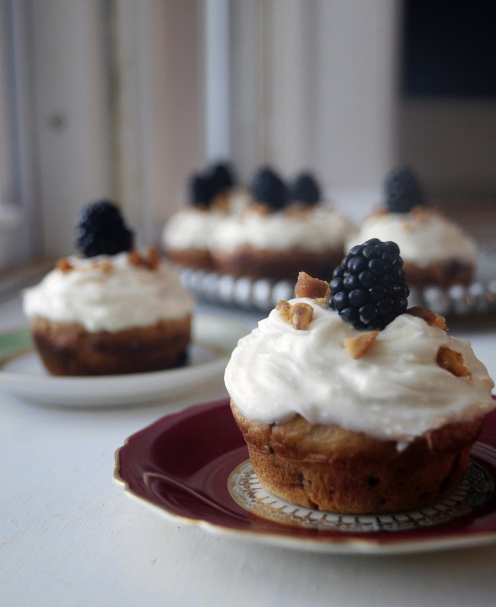

Honey Cake

Description
This Game of Thrones Honey Cake recipe can be made up ahead of time and is loaded with comforting flavors like honey, cinnamon, and nutmeg and laced with coffee, orange juice, and bourbon.
Ingredients:
- 3 1/2 cups all-purpose flour
- 1 tablespoon baking powder
- 1 teaspoon baking soda
- 1/2 teaspoon salt
- 4 teaspoon ground cinnamon
- 1/2 teaspoon ground cloves
- 1/4 teaspoon ground nutmeg
- 1/4 teaspoon ground ginger
- 1 cup vegetable oil
- 1 cup honey
- 1 1/2 cups granulated sugar
- 1/2 cup light brown sugar
- 3 eggs room temperature
- 1 teaspoon vanilla extract
- 1 cup warm coffee
- 1/2 cup fresh squeezed orange juice
- 1/4 cup bourbon can be subbed for extra orange juice
- Berries and confectioners' sugar for garnish
Steps:
- Preheat oven to 350 degrees F. Spray a mini bundt pan with cooking spray and set aside.
- In a medium bowl, combine flour, baking powder, baking soda, salt, cinnamon, cloves, nutmeg, and ginger and set aside.
- Add oil, honey, sugar, and eggs to a large bowl or stand mixer and beat together until combined, scraping down the sides as needed.
- Add vanilla, coffee, orange juice, and bourbon to a medium bowl and stir together, add to the eggs and sugar mixture alternately with the flour mixture until fully incorporated.
- Add 1/4 scant cup to each mini cake well and bake for about 15 minutes, until toothpick comes clean. Remove from oven and let cool in the pan for about 15 minutes. Gently run a toothpick along the outer edge of the cakes and use your fingers to gently twist the cake until it comes free.
- Top with berries and confectioners' sugar.
- Cake can also be baked in a 9 x 13-inch pan or a large bundt pan for about 35 to 45 minutes until toothpick comes clean.
Back to home